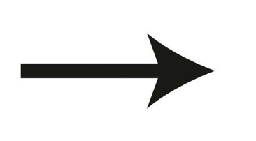
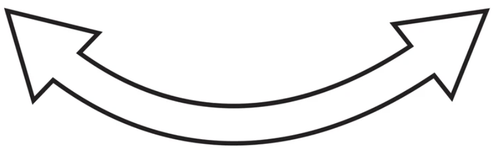

Different types of movement
Linear Motion Devices:
Mechanisms that produce movement in a straight line along a single axis.
Examples: Lead screws, hydraulic/pneumatic cylinders, linear actuators, conveyor belts
Rotary Motion Devices:
Mechanisms that produce continuous circular movement around a fixed axis.

Examples: Electric motors, gears, turbines, wheels and axles, crankshafts
Reciprocating Motion Devices:
Mechanisms that produce repeated back-and-forth motion along a linear path.

Examples: Piston engines, saw blades, sewing machine needles, pumps
Oscillating Motion Devices:
Mechanisms that produce swinging or periodic motion around a pivot point.
